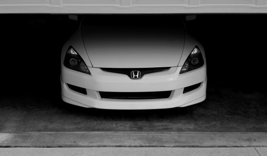
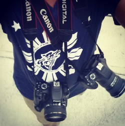

Pictured above is my 2003 Honda Accord. It isn't much, but I do what I can to it. Some modifications include suspension, wheels, and headlights retrofitted with projectors. I've always enjoyed working on things that I can take apart. One day, I hope to own either a Maxda RX-7 FD3S or a BMW E30 chassis.
Yeah, that's me in that video. I grew up in a musical household where both my parents played instruments and always had music playing. I started playing piano when I was 7 and have picked up a handful of other instruments such as the trumpet, euphonium, guitar, bass, drums, and a few others since then. I marched for the UF marching band my freshman year and I ocassionally even perform for events hosted by various clubs on campus. You'll almost always see me listening to or playing something.
While amateur at best, I enjoy filming and producing videos. Above is a video I did for a dance group at UF called Anomaly. During the 2012-2013 academic year, I held the position of Vice President of Multimedia as part of the Executive Board for the Filipino Student Association. During my time on the board, I produced dozens of videos to promote the organization, events, and its members - some of which gained thousands of views, and one even aired on international television.
